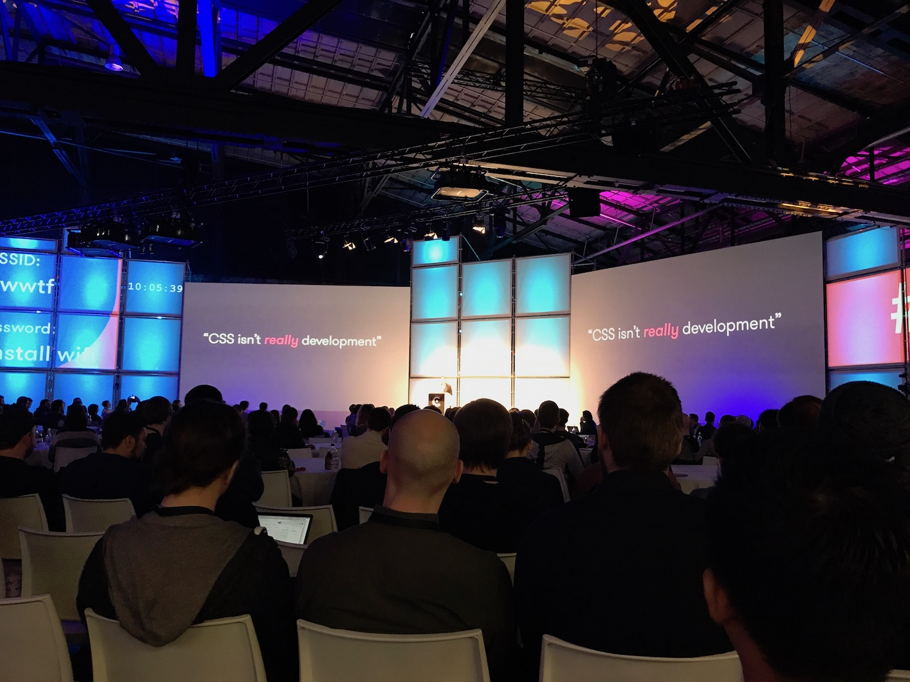

# Best talks
👻
## Addy Osmani: The Browser Hackers Guide To Instantly Loading Everything
* Great web performance talk
* Real examples from Twitter lite
* Follow @addyosmani if you don't already
## CSS and the First Meaningful Paint
* Preload & server push, to get fast initial load
* Many similarities to Addy Osmanis talk
* https://speakerdeck.com/patrickhamann/css-and-the-first-meaningful-paint-css-conf-eu-may-2017
## Preact: Into the void 0
* Preact author explains how it's made
* Helped me understand React better
* http://slides.com/developit/preact-into-the-void0#/
Preact:
## YES, your site too can (and should) be accessible.
* Lessons from making FT.com accessible
* Plenty of practical tips that would help our public sites too
Tips:
npm install a11y
Throw away the ğŸ - developers without mouse create keyboard accessible sites
A11Y test
# Funny / interesting
## Source maps throught the looking glass
* How do source maps actually work
* Practical tips on using source maps in production
## Getting reactive with css
* Combining css variables and rxjs to create cool UX
* http://slides.com/davidkhourshid/getting-reactive-with-css
## A visulization a month
* Cool datavisualizations
* Nice project where they did 1 viz each month -> good model for focus
## ServiceWorkers Outbreak: index-sw-9a4c43b4b47781ca619eaaf5ac1db.js
* Funny presentation about a zombie service worker that will never die
* Cautionary tale from mistake
* Testing practices and tools to avoid the same mistake
## What I learned
📖
Hot topics
Loading performance: 5s in crappy conditions
A11y and I11n
Emojis in presentations 🐙🌈👍
Was it worth it?
👌🏻
## Tips for next year
* Be in time, tickets sell out fast:
* Agree ahead of time that you can go there
* Follow @jsconfeu and buy tickets immediately when available
* Conference is intense, no time for tourism
* Maybe book a free day after the conference to see the city